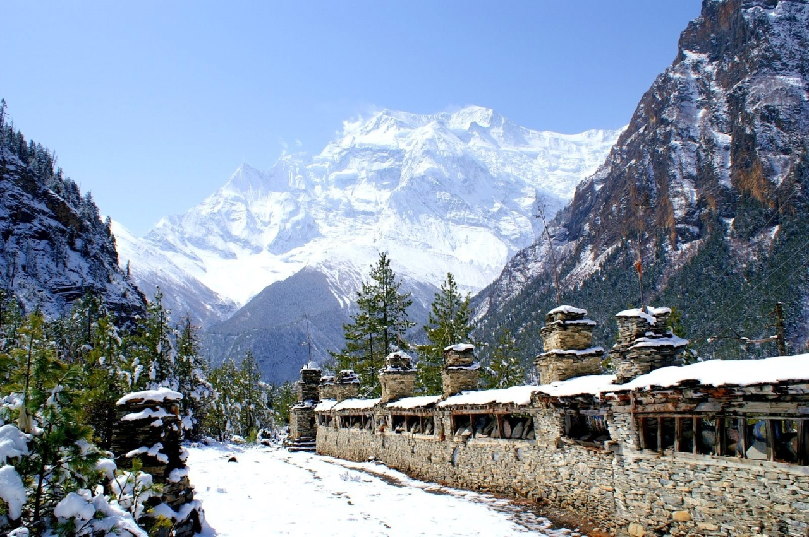
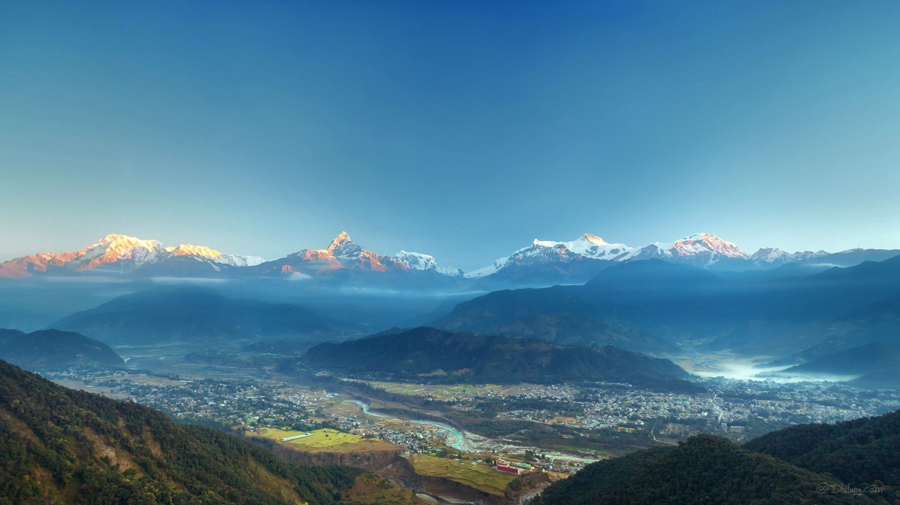
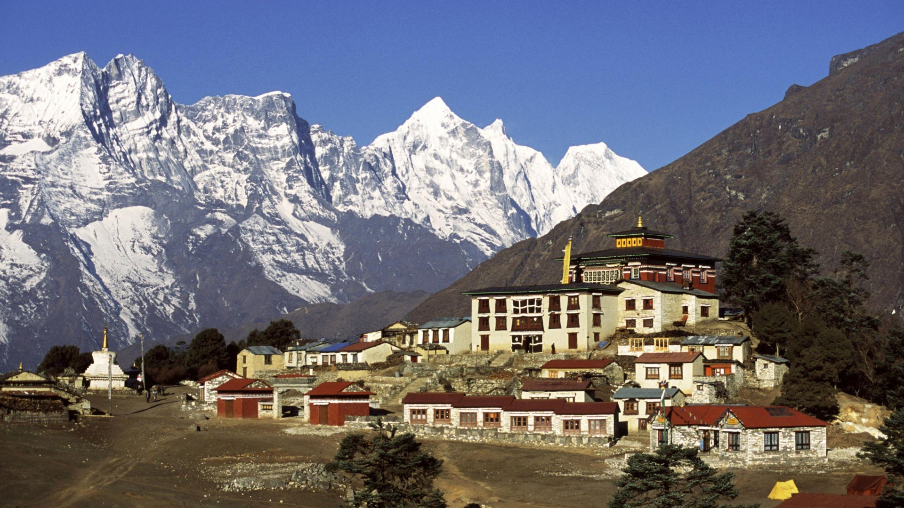
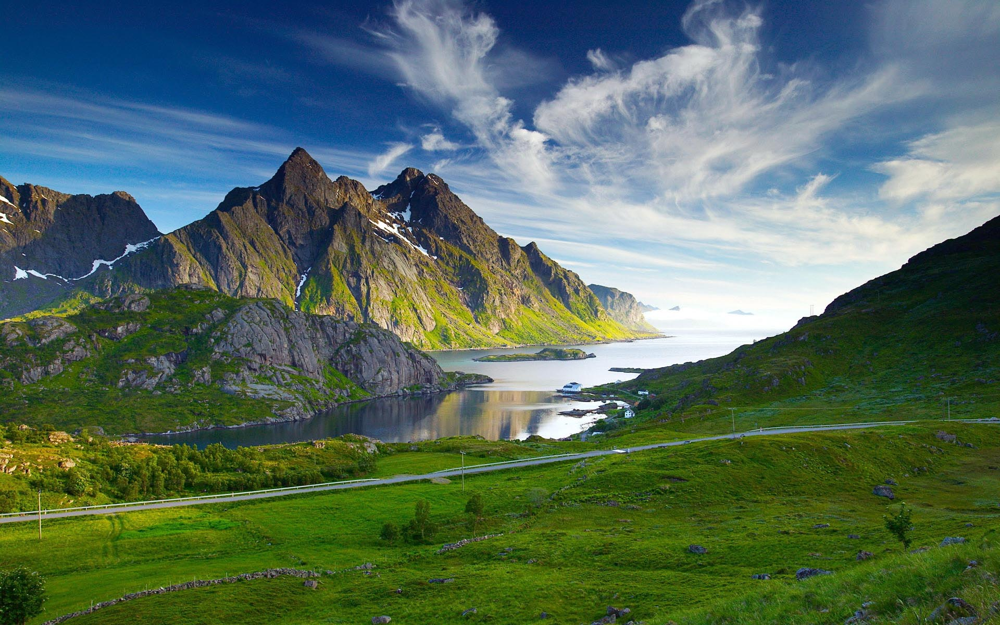
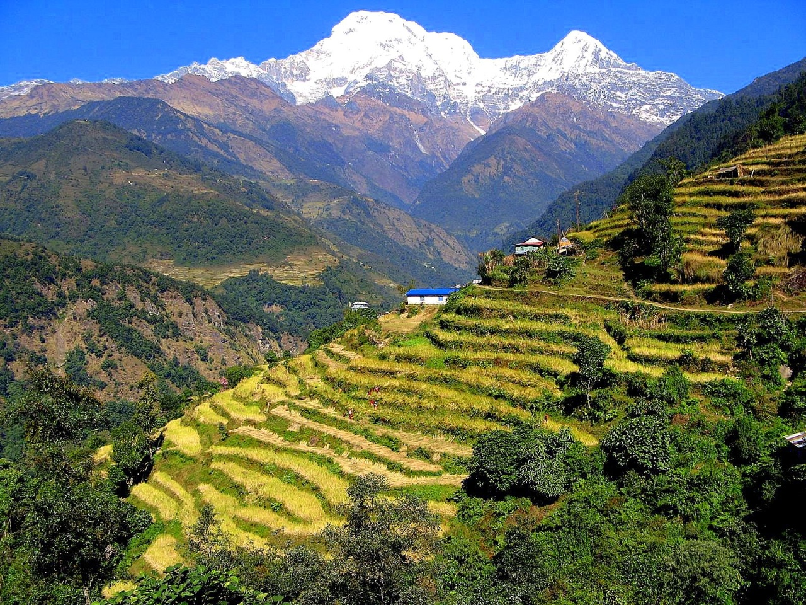
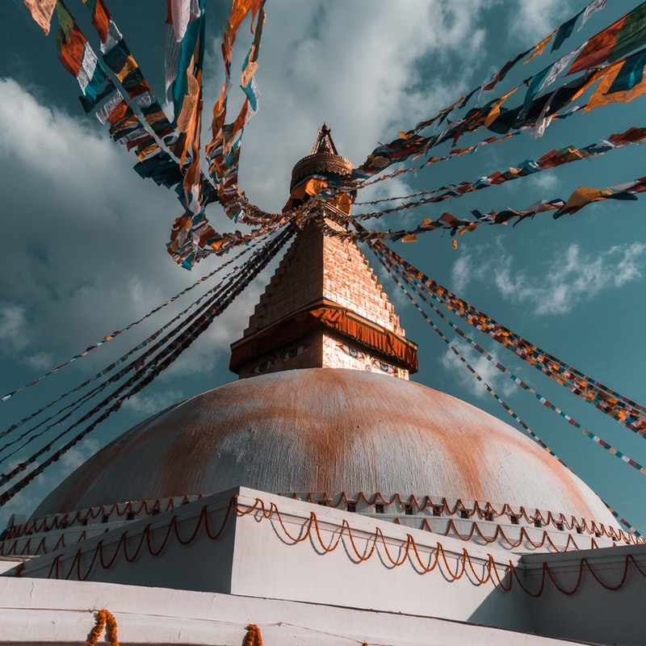
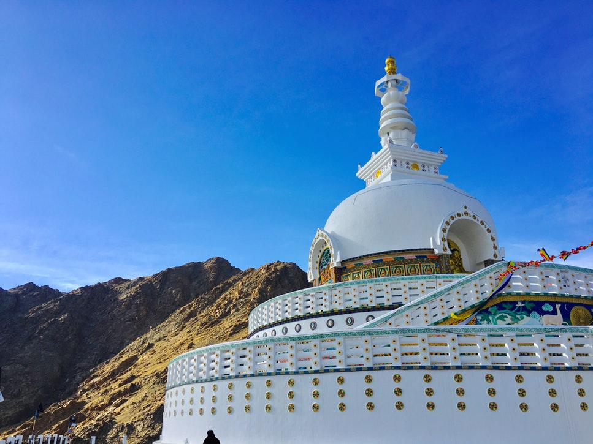
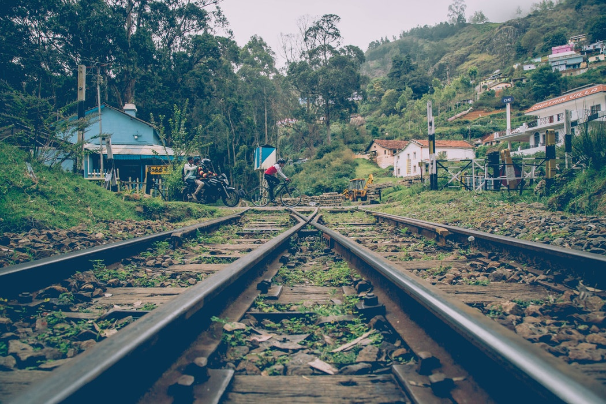
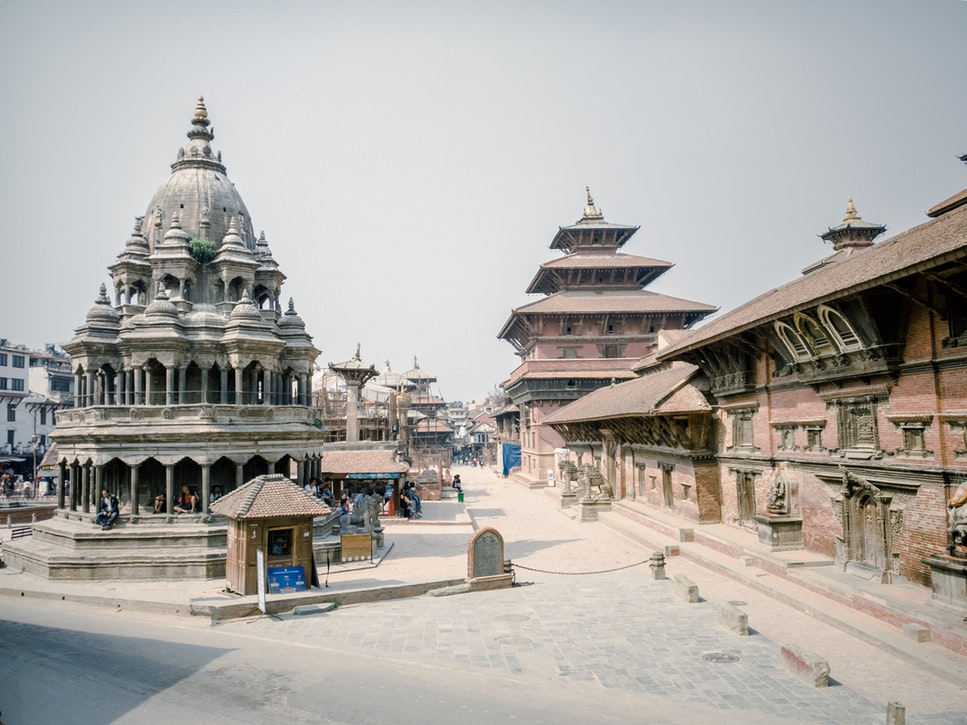

Knowing Nepal
Nepal, often described as the Switzerland of Asia is a small but exciting landlocked nation. It is covered with Snow-white Himalayan Mountains and full of awe-inspiring scenery. One may describe Nepal in their own terms but all definitions sum up to one word “Beautiful”. Your experience in this “Heaven on Earth” will get you constant switch of feelings from enjoyable, rejuvenating and peaceful to exciting and sensational. For a relatively small country, Nepal has a diverse landscape, the best being the Himalayan Mountains.
Contradicting its status of once being an official Hindu country, Nepal strongly holds to its Tibetan Buddhist influence.The capital city Kathmandu
The capital city of Nepal is a historic and cultural city of Newars. This largest metropolitan city of Nepal hosts numerous display of magnificent Newari art work in the form of ancient temples as well as traditional festival celebrations all year round. Kathmandu is also the core of urban infrastructure development of Nepal and the only gateway to the tourism adventure in Nepal. This blend of ancient culture and modern development makes it a unique tourist destination worth a visit. is an ancient cultural city full of time-worn temples and the center for Tibetan Buddhism, offering all kinds of tours and trekking to temple areas and to the Himalayas.
Adjoining Kathmandu are other two ancient cities of Patan The city of fine arts, Patan also known as Lalitpur is one of the most vibrant cities of Nepal. Patan is one of the three Newar cities of the Kathmandu valley and is situated 5 kms south east of Kathmandu city. The 2,300 years old Patan city is extremely rich in its arts and architecture. and Bhaktapur which are full of temples and rich architecture which are just amazing and seriously breathe taking. These three historic cities make the Kathmandu valley, home to ethnic Newars community of businessmen, farmers and artists. The UNESCO has enlisted the Kathmandu valley it in its world cultural heritage site.
Nepal is blessed with immense natural wonders that you would not find anywhere in the world. In a true sense, it is the paradise on earth and any nature lover’s dream destination. Although Nepal only covers 0.1% of global land but considering the rich natural treasure it has in stock for all, certainly visiting it once is not enough to experience all of it.
You could go high up to the magnificent chain of mountains called the Himalayas and climb the tallest peaks in Lumbinithe world like the highest of all Mount Everest, or go down to the plains to the city of Lumbini and visit the birthplace of Buddha, the founder of Buddhism. The mid-region has some of the best trekking trails in the world which takes you through some small ethnic Gurkha villages especially of the Rai and Gurung community.
Frankly speaking, Nepal is a poor country, but it is rich in scenic grandeur and cultural treasures. One could go on and on admiring Nepal and its beauty but you can never understand the thrill and fun Nepal could offer until you pack your bags and head straight down to Nepal. It's the kind of country that lingers in your dreams long after you leave it. Nepal is a country one must visit in their life time because exploring Nepal is to explore oneself.
Credit:Nepal Tours & Travel
Now Play a music below created by me using audacity and Enjoy some beautiful scenes of Nepal









Here's a short video of Nepal including Mt.Everest:
Click here to know and learn more about Nepal.
THE END